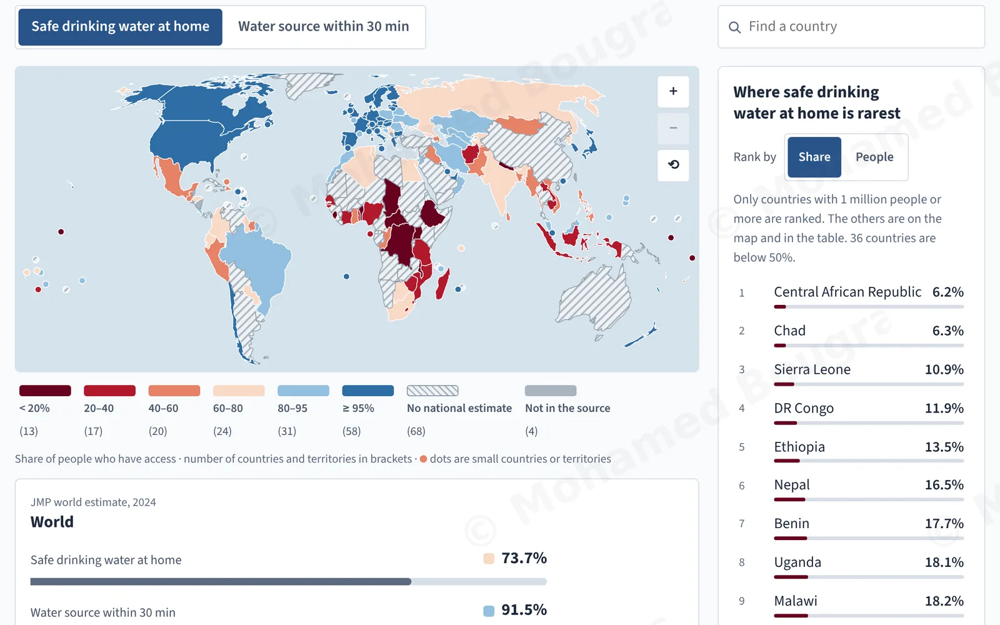
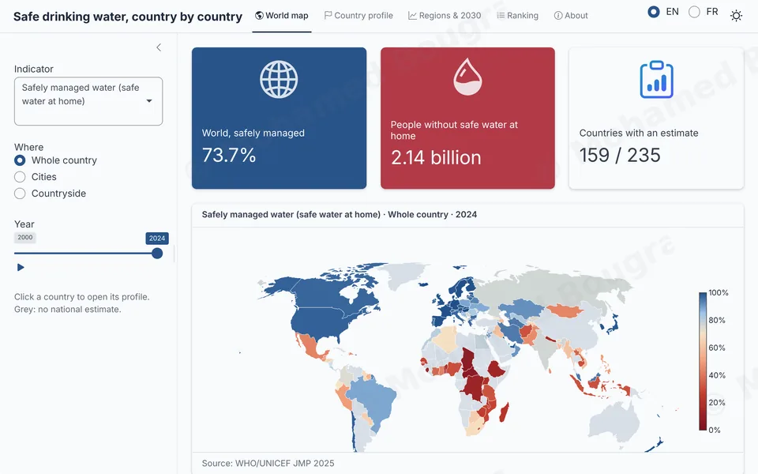
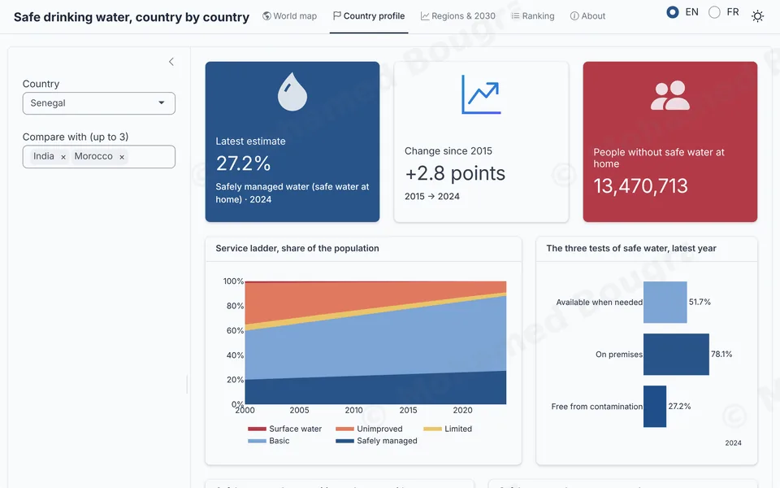
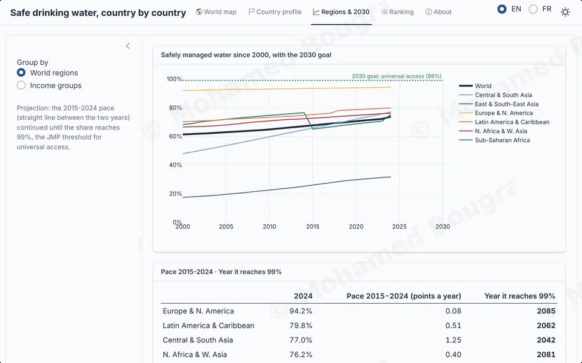
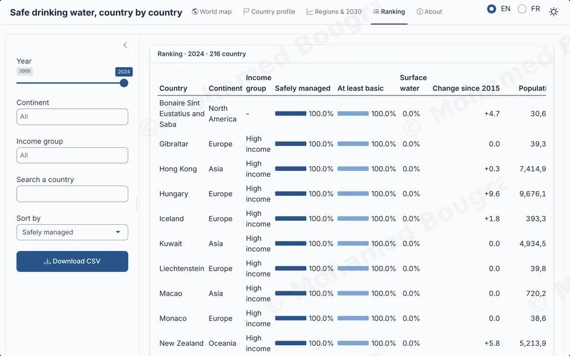
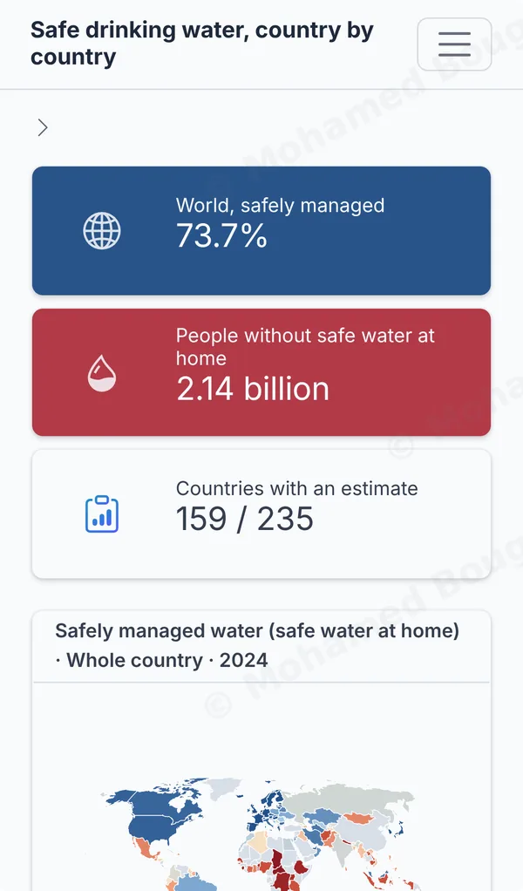

Case study · R Shiny · 2026
Safe drinking water, country by country, in R Shiny
An app to explore access to safe drinking water in 235 countries and territories, from 2000 to 2024: four views, two languages, and R running in the browser, with no server.
First load: 10 to 40 seconds depending on the connection, while R is downloaded into your browser. Nothing is installed on your device. The app opens in a new tab.
- Year
- 2026
- Tools
- R, Shiny, bslib, plotly.js, webR
- Data
- WHO/UNICEF (JMP 2025), 2000-2024
- Format
- Web app, no server, computer and phone
Same map, two languages

What this project shows
- 4
Shiny modules, one per tab, each tested with
testServer. - 31
automated checks, on the calculations and on the modules.
- 60 → 9 s
to show the map in my measurements on the live site, before and after optimisation. On a slower connection, allow up to 40 s.
Safe drinking water for all by 2030?
The UN set universal access to safe drinking water as a goal for 2030. The WHO and UNICEF estimates show where each country stands, but they come as tables of several thousand rows.
The app makes them readable in a few clicks: where a country stands, how it compares with its neighbours, and how fast the world is moving.
In 2024, 73.7% of the world’s population has safely managed drinking water at home; 2.14 billion people do not. At the 2015-2024 pace, the world would reach 99% in 2062, 32 years after the 2030 target.
Four views, one question each
-
World map
Three indicators, the whole country, cities or countryside, and a year that plays from 2000 to 2024. Countries with no national estimate stay grey instead of disappearing.

-
Country profile
The drinking water service ladder since 2000, the three tests of safe water, the gap between cities and countryside, and a comparison with up to three other countries.

-
Regions and 2030
World regions and income groups since 2000, against the goal. For each, the year it would reach 99% if it kept its 2015-2024 pace.

-
Ranking
Every country for a given year, filtered by continent or income, searchable by name, sorted on the chosen indicator, and exportable to CSV.

-
On a phone
The same views on a small screen: the headline figures tighten, the legend moves under the map, and the map fits on the first screen.

Architecture and code quality
Modules that talk to each other
One module per tab, each with its own namespace. The map returns the clicked country; the country profile exposes a way to select it.
Linked views
One year for the whole app: choosing it on the map moves the ranking and the marker on the charts. Clicking a country, on the map, in the list or in the ranking, opens its profile.
A link you can share
The address names the language, the tab and the country: you can send a country’s profile, and the app opens on it.
A custom Shiny output
R builds each figure, JavaScript draws it with plotly.js and sends the clicks back to R. The plotly package for R would have added 95 MB to load in the browser.
A lean reactive graph
Reactives cached with
bindCache, search and comparison debounced withdebounce: one computation per meaningful change.Tested
18 checks on the calculations with testthat, and 13 on the modules with
testServer.Bilingual, light and dark
English or French, light or dark theme, switched without reloading the page; the current choices are kept.
Designed for phones
On a small screen, legends and colour scales move under the charts, and tables scroll sideways with their first column held in place.
clic <- carte_server("carte", lang, sombre)
pays <- pays_server("pays", lang, sombre)
# Modules talking to each other: a click on the map opens that country.
observeEvent(clic(), {
pays$selectionner(clic())
nav_select("onglets", "pays")
})From 60 to 9 seconds
With no server, R runs in the browser thanks to webR. The first version took a minute to show the map. I measured the loading step by step, then removed what did not serve the visitor:
- the page and its theme are prepared once, at publication, instead of at every visit;
- the page’s files are served straight to the browser instead of going through R one by one;
- country shapes stay in the browser; only codes and values go through R.
| Milestone | Before | After |
|---|---|---|
| Interface visible | 28.9 s | 8.5 s |
| Map displayed | 60.1 s | 9.4 s |
What I used
- R
- Shiny modules
- bslib
- testthat
- JavaScript
- D3
- plotly.js
- webR and shinylive
- Web performance
- Accessibility
Data: WHO/UNICEF Joint Monitoring Programme (JMP), 2025 estimates, years 2000 to 2024. Same data as my Power BI report on drinking water.